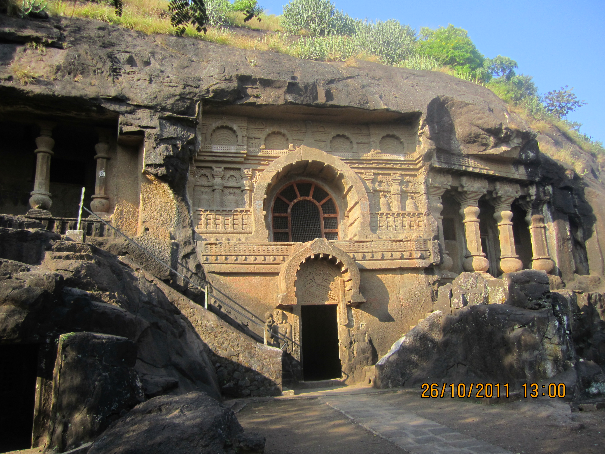
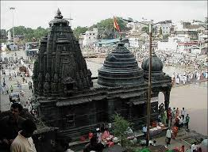
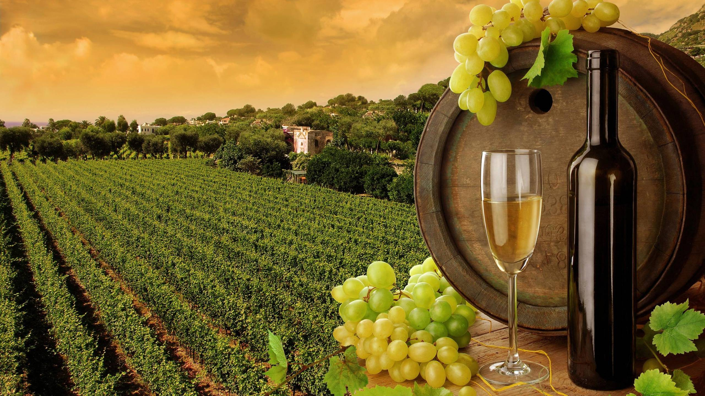

Nashik
is a city in the northwest region of Maharashtra in India, and is the administrative headquarter of the Nashik District and Nashik Division.
The city is situated at the foothills of the Western Ghats mountains on the banks of the river Godavari. At 700 m (2,300 ft) above sea level, its elevation is highest among the major cities in Maharashtra and one of the highest among million plus cities in India.
Geography
Trimbakeshwar Temple near Nashik (source of the Godavari River)
Nashik lies in the northern part of Maharashtra state at 700 m (2,300 ft)[5] from the mean sea level. The river Godavari originates from the Brahmagiri Mountain, Trimbakeshwar about 24 km (15 mi) from Nashik and flows through the old residential settlement, now in the central part of the city. Due to high pollution created by factories in proximity of the city the river was dying at an alarming rate. It has since been successfully cleaned.[6] Other than Godavari, important rivers like Vaitarana, Bhima, Girana, Kashyapi and Darana flow across Nashik.[7]
Nashik lies on the western edge of the Deccan Plateau which is a volcanic formation.[8] Lime and Kankar (Kankur) nodules are found widely in Nashik district. The district shares border with Jalgaon and Aurangabad to east, Ahmadnagar to the south, while Thane and parts of Gujarat state are on the west.[9][not in citation given]
Trimbakeshwar is about 30 km (19 mi) from the city, it is where from river Godavari originates. The land area of the city is about 259.13 km2 (100.05 sq mi).
Pandavleni Caves

Shiv-temple

SULA wineyard

Travell
- Roadways
- Railways